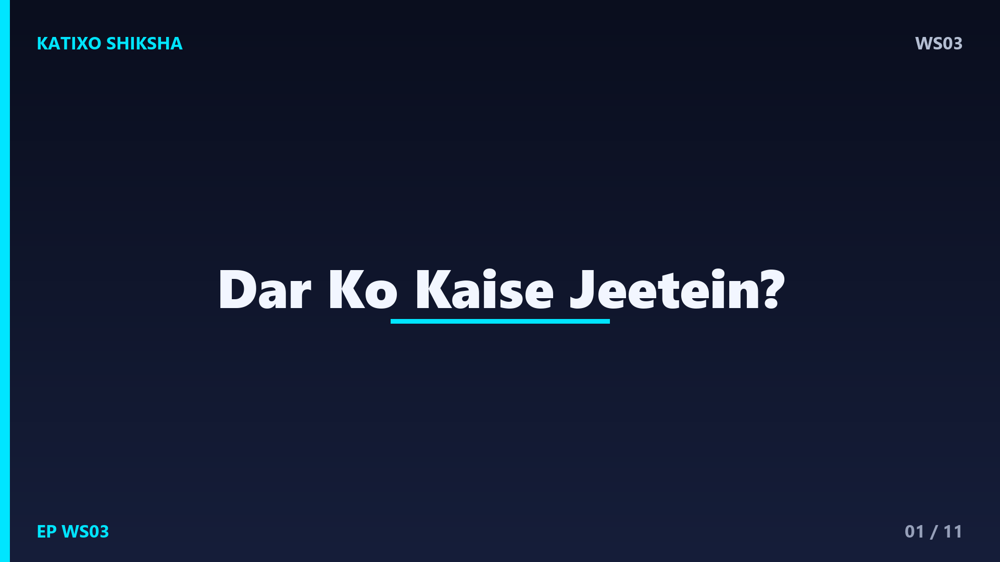
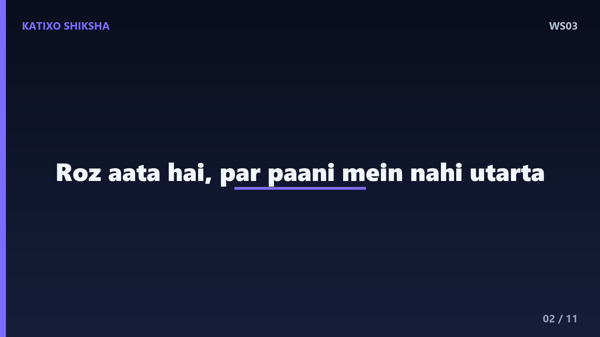
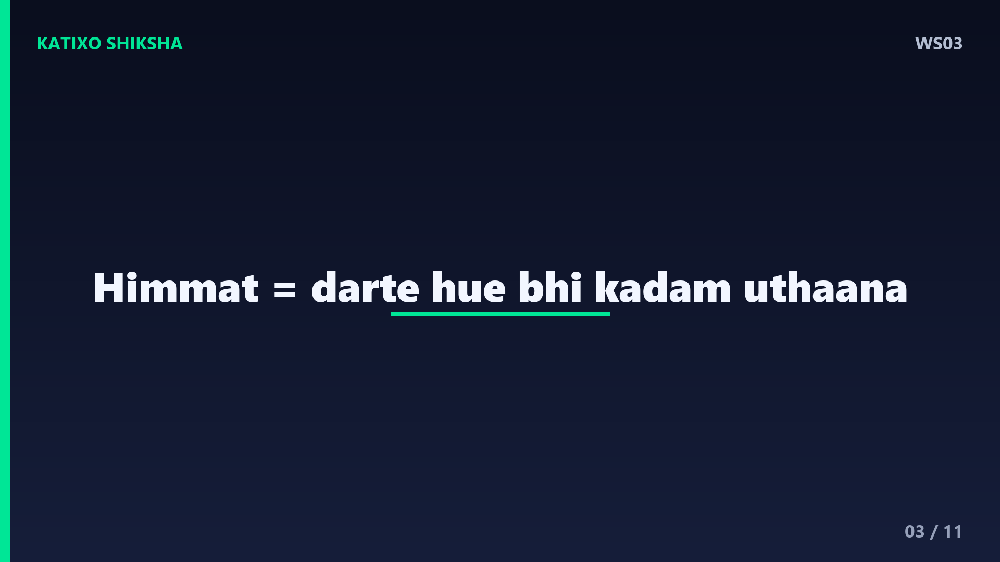
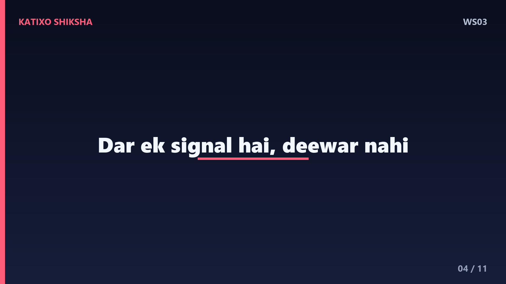
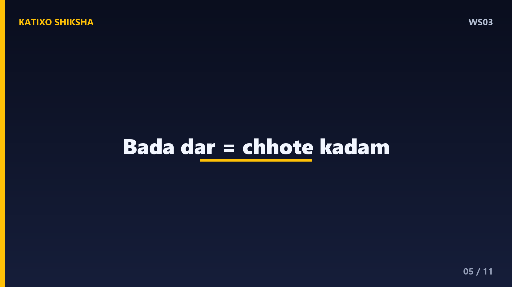
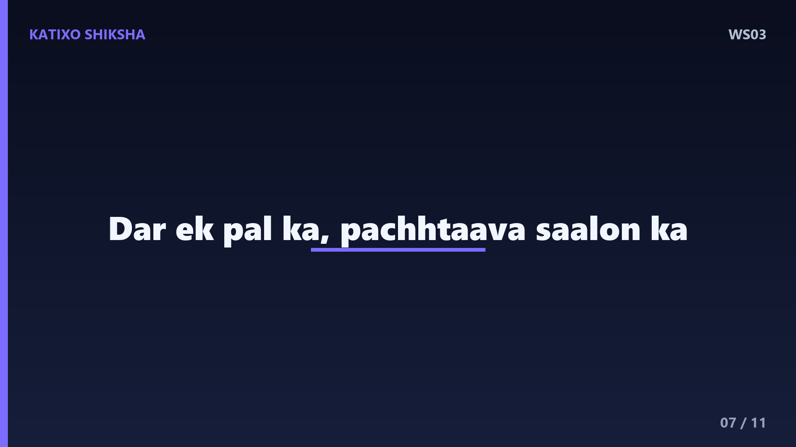
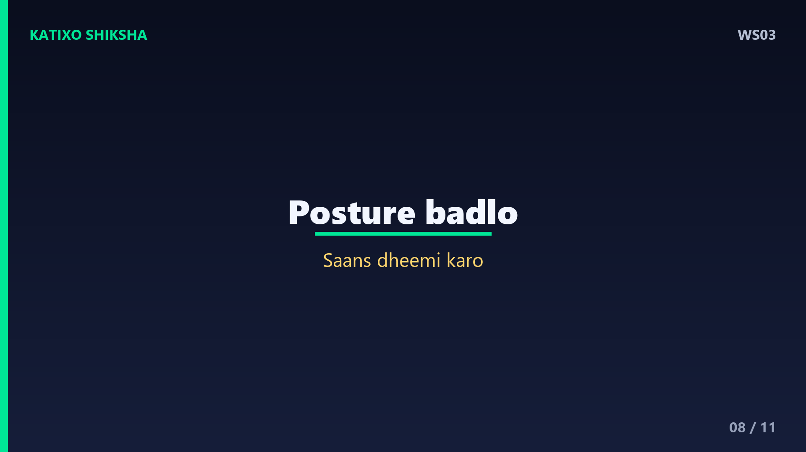
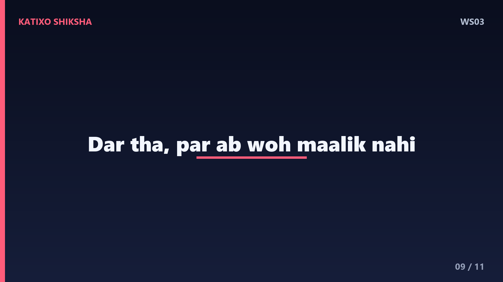
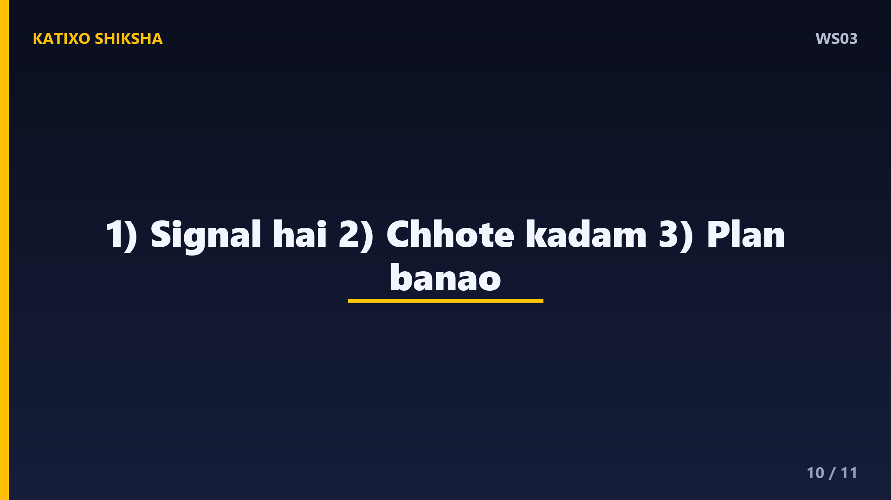
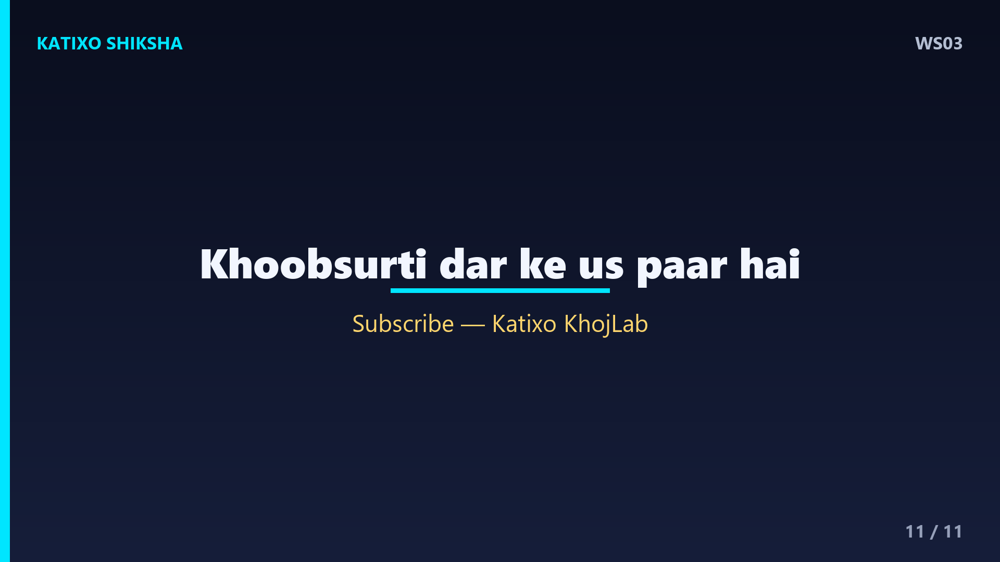

WS03 — Dar Ko Kaise Jeetein?

Slide 1दोस्तों, एक सच बताओ — कितनी बार डर ने तुम्हें रोक दिया? वो बात कहने से डर, वो step लेने से डर, वो सपना पूरा करने से डर। हम सोचते हैं बहादुर लोग वो हैं जिन्हें डर नहीं लगता। पर सच इसके बिल्कुल उल्टा है। मैं हूँ Katixo KhojLab, और आज की कहानी तुम्हें डर का असली राज़ बताएगी — कि उसे मिटाना नहीं, बल्कि उसके साथ चलना ही असली हिम्मत है। चलो शुरू करते हैं।

Slide 2एक छोटे से गाँव में एक लड़का था, नाम था अर्जुन। उसे तैरना सीखना था, पर नदी से बहुत डर लगता था। वो रोज़ किनारे पर खड़ा होता, पानी देखता, और लौट आता। एक दिन एक बूढ़ा मछुआरा उसे देख रहा था। उसने पूछा — बेटा, रोज़ आता है, पर पानी में क्यों नहीं उतरता? अर्जुन बोला — डर लगता है, डूब गया तो? मछुआरा हँसा और बोला — आ, तुझे डर का एक राज़ बताता हूँ।

Slide 3मछुआरे ने कहा — तू सोचता है कि पहले डर खत्म होगा, फिर तू पानी में उतरेगा। पर ये कभी नहीं होगा। डर किनारे पर खड़े रहने से नहीं जाता, पानी में उतरने से जाता है। हिम्मत का मतलब डर का ना होना नहीं है — हिम्मत का मतलब है डरते हुए भी कदम उठाना। बहादुर लोग भी डरते हैं, फ़र्क सिर्फ़ इतना है कि वो डर को अपना मालिक नहीं बनने देते।

Slide 4Lesson नंबर एक — डर एक signal है, एक दीवार नहीं। हमारा दिमाग लाखों सालों से एक ही काम करता आया है — हमें खतरे से बचाना। पर आज के ज़माने में अक्सर वो झूठा alarm बजाता है। जिस चीज़ से तुम्हें डर लगता है, अक्सर वही चीज़ तुम्हारे growth का रास्ता होती है। डर तुम्हें ये नहीं बता रहा कि रुक जाओ — वो बता रहा है कि यहाँ कुछ important है, ध्यान दो।

Slide 5अब एक practical technique — डर को छोटे टुकड़ों में तोड़ो। अर्जुन एकदम गहरे पानी में नहीं उतर सकता था, पर वो पहले सिर्फ़ पैर भिगो सकता था। फिर घुटनों तक, फिर कमर तक। Psychology में इसे कहते हैं exposure — धीरे-धीरे डर का सामना करना। एक बड़ा डर हमेशा छोटे, आसान कदमों में बँट सकता है। तुम्हें पूरी सीढ़ी एक बार में नहीं चढ़नी — बस अगला एक कदम लेना है।
Slide 6Technique नंबर दो — अपने डर से बात करो, उससे भागो मत। एक कागज़ लो और लिखो — मुझे किस बात का डर है? और फिर पूछो — सबसे बुरा क्या हो सकता है? अक्सर जब हम उस worst case को साफ़-साफ़ लिखते हैं, तो वो उतना भयानक नहीं लगता जितना दिमाग में लगता था। और साथ में लिखो — अगर वो हुआ, तो मैं क्या करूँगा? जैसे ही तुम्हारे पास एक plan होता है, डर अपनी आधी ताक़त खो देता है।

Slide 7मछुआरे ने एक और गहरी बात कही — बेटा, डर का सबसे बड़ा झूठ है regret. आज जिस डर से तू भाग रहा है, कल वही तेरा सबसे बड़ा पछतावा बन जाएगा। ज़िंदगी के आखिर में लोग की गई गलतियों से नहीं, बल्कि ना उठाए गए कदमों से सबसे ज़्यादा दुखी होते हैं। डर एक पल का होता है, पर पछतावा सालों तक रहता है। यही सोचकर अर्जुन के अंदर एक नई हिम्मत जागी।

Slide 8Technique नंबर तीन — body को बदलो, मन अपने आप बदलेगा. जब डर लगता है, तो साँस तेज़ हो जाती है, कंधे झुक जाते हैं। उल्टा करो — सीधे खड़े हो जाओ, कंधे पीछे, और धीरे-धीरे गहरी साँस लो। Science कहती है कि जब तुम confident body language अपनाते हो, तो दिमाग भी थोड़ा confident महसूस करने लगता है। डर के पल में, अपनी posture और साँस को control करना तुम्हें एक सेकंड में मज़बूत बना सकता है।

Slide 9और फिर वो पल आया। अर्जुन ने गहरी साँस ली, अपने डर को महसूस किया, और पानी में एक कदम रखा। फिर दूसरा। हाँ, डर अभी भी था, पर अब वो उसका मालिक नहीं था। कुछ दिनों में अर्जुन तैरने लगा। मछुआरा किनारे पर मुस्कुरा रहा था। उसने कहा — देख बेटा, नदी वही है, पानी वही है, बस तूने खुद को बदल लिया। डर अब भी आएगा, पर अब तू जानता है उसके साथ कैसे चलना है।

Slide 10चलो आज की तीन सबसे बड़ी सीख याद कर लें। पहली — डर एक signal है, दीवार नहीं; वो अक्सर तुम्हारे growth का रास्ता दिखाता है। दूसरी — बड़े डर को छोटे, आसान कदमों में तोड़ दो और बस अगला कदम लो। और तीसरी — worst case को लिख दो और एक plan बना लो, डर आधा कमज़ोर हो जाएगा। ये तीन चीज़ें तुम्हें डरते हुए भी आगे बढ़ना सिखा देंगी।

Slide 11याद रखना दोस्तों — हिम्मत का मतलब डर का ना होना नहीं है। हिम्मत का मतलब है, डर के बावजूद वो काम करना जो तुम्हारे लिए मायने रखता है। तुम्हारी ज़िंदगी का सबसे खूबसूरत हिस्सा अक्सर तुम्हारे डर के ठीक उस पार छुपा होता है। आज एक छोटा सा डरा हुआ कदम उठाओ। अगर ये कहानी काम की लगी, तो Like, share, aur Katixo KhojLab ko subscribe karna mat bhoolna. Milte hain agli kahani mein! तब तक — डरो, पर रुको मत।